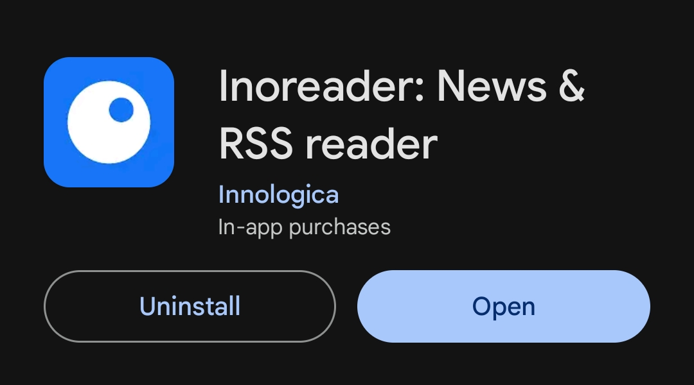
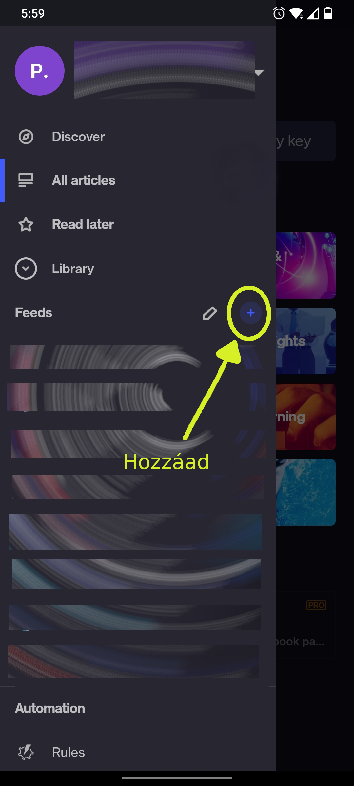
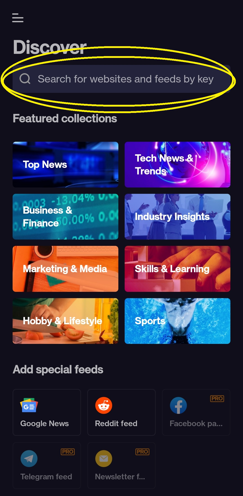

„Készítse el saját hírfolyamát” – áll az Inoreader alkalmazás oldalán.
Az Inoreader egy olyan alkalmazás amellyel saját hírfolyamot hozhatunk létre kedvenc hírportáljainkból, blogjainkból és a YouTube -on követett csatornáinkból. Facebook oldalt is lehet hozzáadni, de az már a fizetős csomagba tartozik.
Itt az ingyenes csomagról lesz szó.
Miért hasznos egy ilyen applikáció?
Mert csak az olyan tartalmak kerülnek eléd, amelyek igazán érdekelnek, így kisebb az esély arra, hogy mindenféle ilyen-olyan cikk, bejegyzés, reklám, stb. elvonja a figyelmet arról, ami miatt felnyitottad a telefont. Egyszóval (vagy kettővel): tudatosabb tartalomfogyasztás.
Rövid használati útmutató:
• Play Store -ból letöltjük az applikációt (asztali applikációként is használható, böngészőből bejelentkezve a már regisztrált fiókunkba)

• Regisztrálunk
• Egyenként hozzáadjuk a követni kívánt oldalak, blogok, YouTube csatornák linkjeit.

